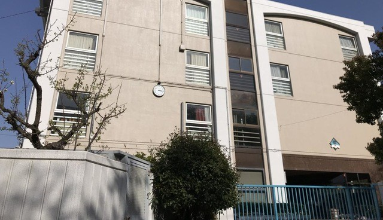

[🏠
ホーム
] | [🗣️
語録
] | [⏳
年表
] | [📸
写真集
] | [🏫母校]
💎 登 戸 ・ 枡 形 ． Ｍ ｅ ｍ ｏ ｒ ｉ ｅ ｓ 💎
⚠️言われた通り、９０年代風にしてみました⚠️
【 第一章：川崎市立登戸小学校 】
登小の伝説
・今はなき思い出のスベレスト
・笑顔であいさつ！！登戸小学校！！！わぁぁ～～！！（おはスタ収録）
公式HP
📢
川崎市立登戸小学校 公式サイトへ
NEW!!
※校歌は見当たりませんでした（笑）
✨💎 ま だ ま だ 続 く サ フ ァ イ ア の 輝 き 💎✨
【 第二章：川崎市立枡形中学校 】

枡中といえば
・苦行の坂道
・上の山道はカップル専用。
・結構枡中の構造気に入ってる
年間行事(一年生)
4月：対面式
5月：体育祭
10月：合唱コンクール
2月：自然教室
PTA広報
・【重要】ジャージの着こなしについて
・【募集】ふれあいフェスティバルのボランティア参加について
・【お願い】踊り場での叫び声は控えめに
校歌
🎵
枡形中学校校歌を聴く（外部リンク）
ななほへ
最後まで読んでくれてありがとう。
目が疲れたら、遠くの緑（枡形の山とか）を見てね。
推奨ブラウザ：Netscape Navigator 4.0 / 解像度：800x600
管理人：小林（サファイアブルー担当）